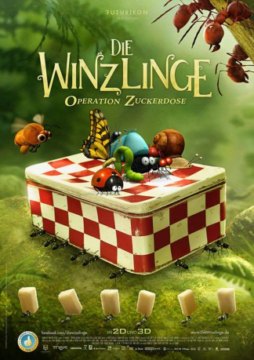

Alternativ: Minuscule: Valley of the Lost Ants (Englischer Titel)
 
 IMDB-Wertung: 7.2 / 10
IMDB-Wertung: 7.2 / 10  Metascore:
Metascore: 
Auf einer kleinen, friedlichen Lichtung im Wald entbrennt ein erbitterter Streit zwischen zwei Ameisenvölkern um die essbaren Reste, die bei einem Picknick hinterlassen wurden. Ein mutiger junger Marienkäfer gerät zwischen die Fronten- und es gelingt ihm, ein Mitglied der schwarzen Ameisen zu befreien und gemeinsam mit ihm deren Ameisenhügel vor dem Überfall der schrecklichen roten Ameisen zu verteidigen.
Jahr: 2013
Dauer: 88 Minuten
FSK:
Land: Frankreich Studio: Pandastorm PicturesTonspuren:
Untertitel:
Auflösung: 1080p (1920x808) Größe: 3768 MB
Genre: Abenteuer, Animation/Trick, Familie
Regisseur: Hélène Giraud, Thomas Szabo
Drehbuch: Heinrich von Kleist
Soundtrack:
Darsteller:
Datei: X:\Kinder Collections\Winzlinge\Winzlinge - Operation Zuckerdose, Die (2013, FSK, 1920x808) 3D.mkv seit 14.05.2016
Festplatte: Kinder-Filme+Trick
 Alle Filme aus Gruppe 'Kinder Collections\Winzlinge'
Alle Filme aus Gruppe 'Kinder Collections\Winzlinge'
(der aktuelle Film)